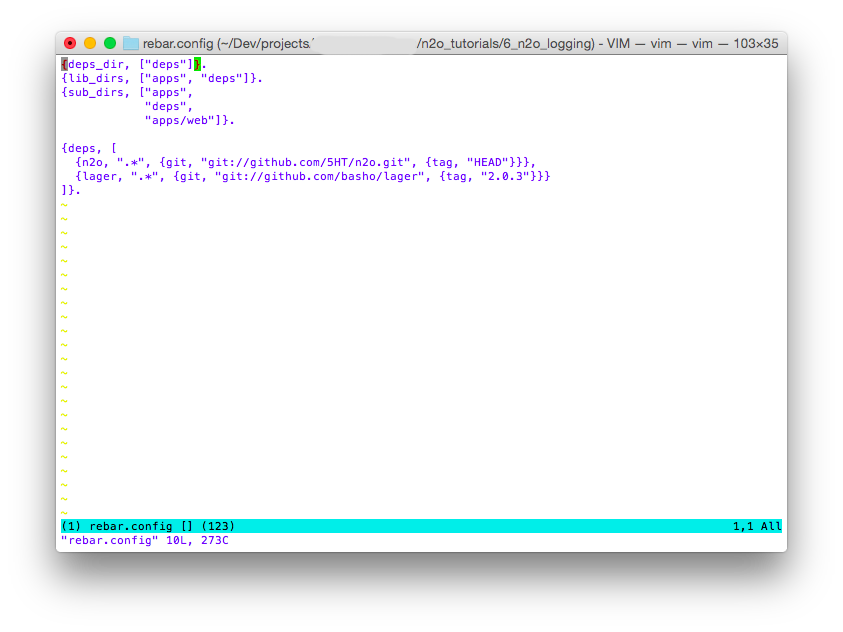
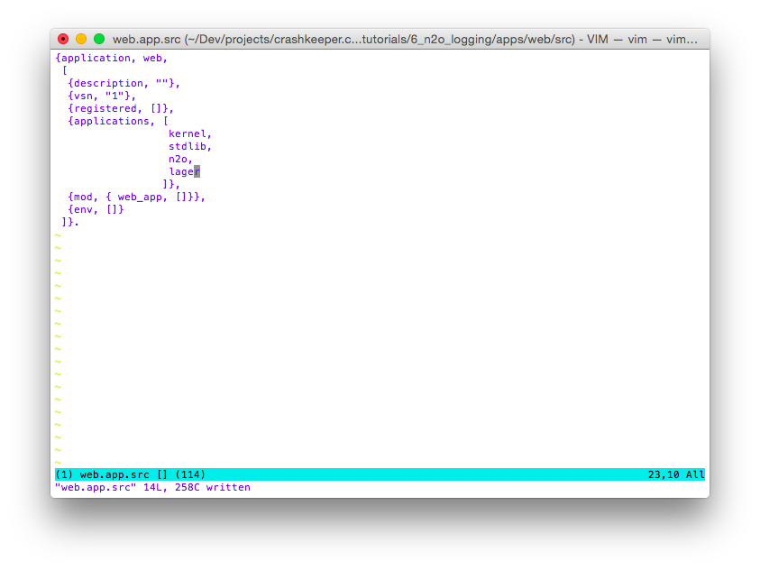
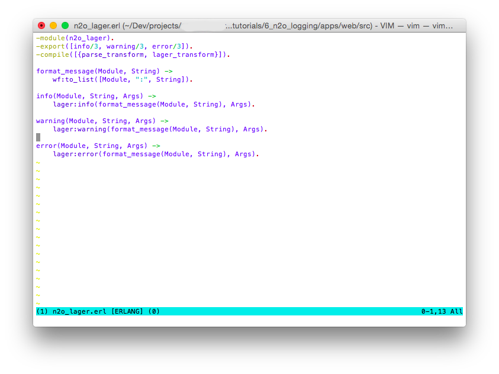
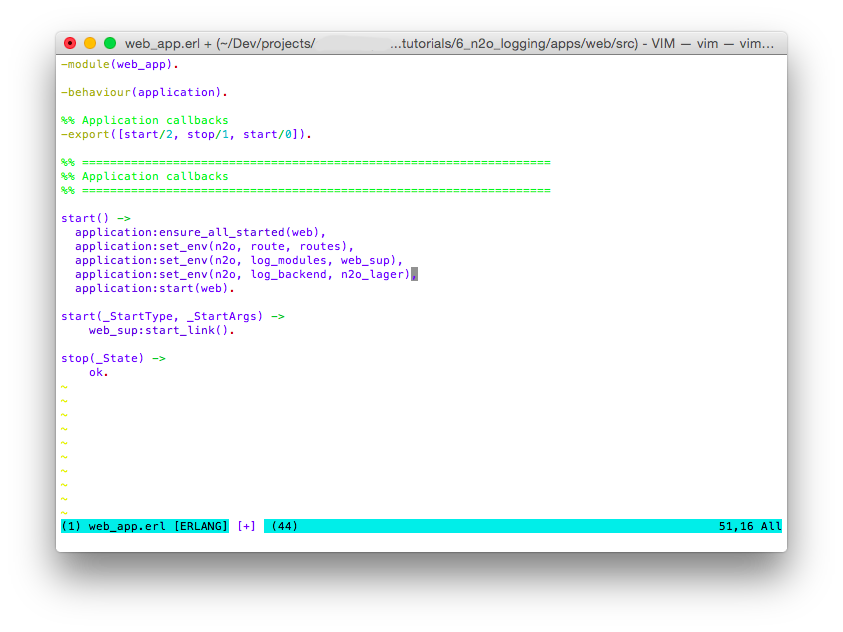
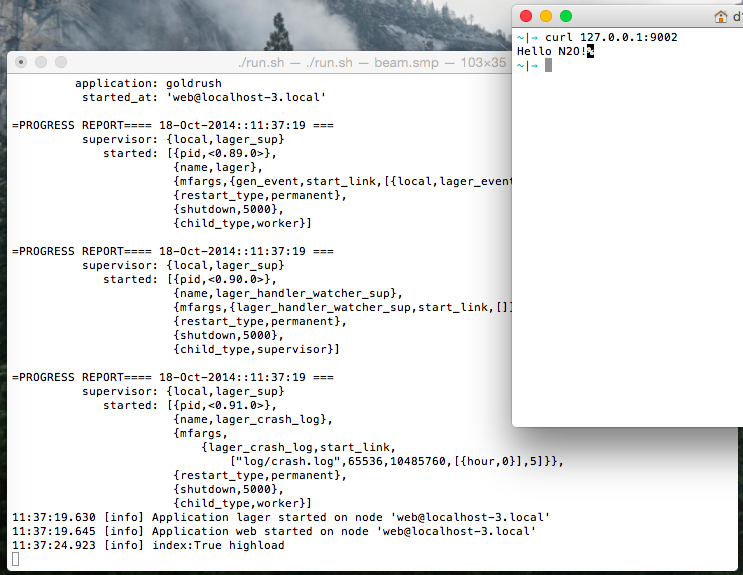

Thu 07 May 2020, tags: ErlangLagerN2Ologging
Re-posting from 2014-10-17
In this tutorial we will show you how to create a custom logging backend for N2O. We will use Lager as a logging library.
As we described in the previous (N2O Logging) tutorial, the logging backend should be implementing 3 methods:
- warning/3
- info/3
- error/3
So, let's get started.
Note: For this example, we will use code from (N2O Logging) tutorial.
As a first step we should add lager to the dependencies list in rebar.config.
vim rebar.config
{deps, [
{n2o, ".*", {git, "git://github.com/5HT/n2o.git", {tag, "HEAD"}}},
{lager, ".*", {git, "git://github.com/basho/lager", {tag, "2.0.3"}}} % added lager
]}.

And add to the applications list in web.app.src for an automatic lager starting
vim apps/web/src/web.app.src
{application, web,
[
{description, ""},
{vsn, "1"},
{registered, []},
{applications, [
kernel,
stdlib,
n2o,
lager % added lager
]},
{mod, { web_app, []}},
{env, []}
]}.

Next, create a new file where we will implement the required functions.
cd apps/web/src % go to the app directory touch n2o_lager.erl % create an empty file
Open n2o_lager.erl file
vim n2o_lager.erl
And write the implementation. The code is pretty straight forward. You can extend this code also. How? I we will show you later.
-module(n2o_lager).
-export([info/3, warning/3, error/3]).
-compile([{parse_transform, lager_transform}]). % force compile
format_message(Module, String) -> % log formatter "module:message"
wf:to_list([Module, ":", String]).
info(Module, String, Args) ->
lager:info(format_message(Module, String), Args).
warning(Module, String, Args) ->
lager:warning(format_message(Module, String), Args).
error(Module, String, Args) ->
lager:error(format_message(Module, String), Args).

Now, when the implementation is ready, let's configure N2O for using our module.
Open web_app.erl and edit start/0 function. We should set up out module as the N2O logging backend.
vim web_app.erl
start() -> application:ensure_all_started(web), application:set_env(n2o, route, routes), application:set_env(n2o, log_modules, web_sup), application:set_env(n2o, log_backend, n2o_lager), % setup a backend for logging application:start(web).

The backend is ready. Let's add some logs to the view files.
cd ../../../ % go to rood directory ./rebar get-deps % get dependencies ./run.sh % start app
And make a call
curl localhost:9002

Links
- Source code: https://github.com/d1ffuz0r/n2o_tutorials/tree/master/6_n2o_logging
- Custom N2O logging backends: https://github.com/d1ffuz0r/n2o.logging
- N2O Logging
Comments !